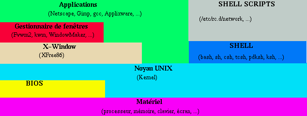
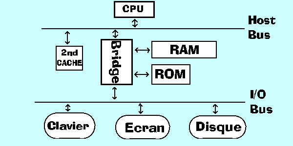
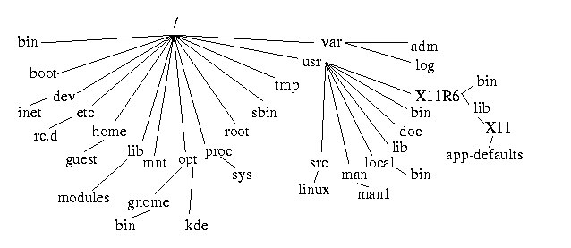

Table des Matières
But du document
Ce document est une courte introduction au système d'exploitation
UNIX. Il donne les informations de base qui vous permettrons d'utiliser
et de comprendre une station de travail UNIX.
UNIX est un OS extrêmement puissant et malheureusement complexe,
ce document vous ouvre une porte vers sa maîtrise. Le but n'est pas
découvrir toutes les fonctionnalités de LINUX, pour cela
il vous faudra lire un ouvrage plus conséquent, par exemple : "UNIX"
de M. Wielsch.
Principes de base et définitions
LINUX est le nom que Linus Torvalds a donné à sa propre
version de UNIX.
Une station de travail (Work Station) est un ordinateur puissant
qui est destiné des tâches praticulières. Il a peu
de temps encore, on opposait les stations de travail aux PCs, qui étaient
bien loin derrière au niveau des performances. Ceci a légèrement
changé, car heureusement pour nous les utilisateurs et malheureusement
pour les fabricants de station de travail, les PCs ont connus un évolution
technologique énorme. Si bien qu'à l'heure actuelle certains
PCs haut de gamme sont plus performants que certaines stations de travail
bas de gamme, pour un prix nettement moins élevé.
UNIX est un système d'exploitation multitâches et
multi-utilisateurs.
(MS-DOS est un système d'exploitation monotâche et mono-utilisateur).
Système d'exploitation :
(Operating System)
|
Il s'agit d'un "programme" qui est charge de gérer les ressources
matérielles (mémoire, écran, clavier, disque...) et
de mettre ces ressources à disposition des programmes de l'utilisateur.
|
| Multitâches : |
Le système d'exploitation est capable de faire "tourner" plusieurs
programmes en même temps. (Sur un ordinateur qui n'a qu'un processeur
les programmes utilisent le processeur tour à tour très rapidement.
Ce qui donne l'impression à l'utilistaeur que les programmes fonctionnent
tous en m^eme temps.)
|
| Multi-utilisateurs : |
Plusieurs utilisateurs différents peuvent utiliser le même
ordinateur en même temps. Ils ont chacun un écran et un clavier
(terminal), ils se partagent le processeur, la mémoire et le disque
dur... Ils ont chacun un acompte différent qui peut être protègé
par un mot de passe, ce qui garantit une securité minimum. Un utilistateur
ne peut pas éffacer les fichiers crées par un autre, sauf
si l'administrateur lui en donne le pouvoir.
|
l'administrateur est la personne qui s'occupe de gèrer
la station de travail. Son role est de créer les acomptes pour le
nouveau utilistaeur et de gèrer la configuration des logiciels.
Le nom de son acompte est toujours "root". Il a tous les pouvoirs, il peut
tout effacer sur le disque dur, changer les mots de passe des utilisateurs
et si il en a envie, il peut lire les fichiers personnels des utilisateurs.
Le SHELL est l'interpréteur de commande. Il sert à
"traduire" les informations qui proviennent du système d'exploitation
en informations compréhensibles par un humain et inversement, à
"traduire" les informations entrées par un humain en informations
compréhensibles par l'OS (Operating System). Il permet aussi de
créer des petits programmes et donne accès à quelque
commandes de base (ls, cd, pwd, ...).
X-Window ajoute des fonctions spécialisées pour
l'affichage graphique.
Le gestionnaire de fenêtres (Window manager) sert à
définir l'apparence des icons, des fenêtres, les couleurs
et les actions à effectuer lorsque l'utilisateur "cilc" avec la
souris.
Le bureau est la totalité de l'écran, là
où viennent se poser les icons, ...
Le BIOS sert à initialiser le matériel, à
vérifier qu'il fonctionne et à charger le Kernel UNIX dans
la mémoire.
Schéma simplifié des différentes couches
logiciels :

Historique
Le premier système d'exploitation UNIX a été créé
en 1969 par Bell Laboratories, un centre de recherche commun à AT&T
et Western Electric. En 1976, le système a commencé à
être diffusé commercialement.
Depuis plusieurs sociétés ont développé
séparément leurs versions de UNIX. Les universités
américaines ont largement contribué au développement
de UNIX, en particulier celle de Berkeley.
AT&T a essayé de définir les standards UNIX, les
différents constructeurs informatiques ne suivent pas forcement
ces standards. Les derniers standards sont l'X/OPEN Portability Guide et
POSIX, beaucoup de sociétés les suivent.
L' X-Consortium du MIT (Massachusetts Institue for Technology) qui réunit
la plus part des constructeurs informatique a développé
l'interface graphique X-Window pour UNIX.
( MS-DOS, le système d'exploitation qui a fait la fortune de
Bill
Gates, est un lointain dérivé de UNIX. Windows NT est
un système d'exploitation qui tente de préserver la compatibilité
MS-DOS et les avantages du Multi-tâches UNIX.)
Il existe plusieurs versions de UNIX qui fonctionnent sur les PC compatibles
IBM, dont une particulièrement intéressante, puisque elle
est gratuite , comprend un nombre impréssionnant d'applications
et est accompagnée de tous les codes sources. Elle s'appelle
LINUX.
Elle a été développée par Linus Torvalds
(Université d'Helsinki Finlande) et des milliers de bénévoles.
A l'heure actuelle,
Linux est
le seul OS pour PC qui peut prétendre concurrencer ceux de Microsoft
dans un proche avenir.
Fonctionnement simple
d'un ordinateur
Tous les ordinateurs doivent contenir les éléments physiques
suivants pour fonctionner :
-
Un micro-processeur (CPU), qui traite les données en fonction des
programmes.
-
De la mémoire RAM, pour y stocker temporairement les données
et les programmes.
-
Une ROM, qui contient un petit programme qui permet d'initialiser l'ordinateur
(BIOS).
-
Des périphériques, pour stocker les programmes et les données,
et pour inter-agir avec les utilisateurs.
-
Un bus (= des fils électriques), qui relie ensemble tous les autres
éléments.
-
Une alimentation électrique en courant continu.
Architecture simplifiée d'un ordinateur :

Séquence de démarrage :
-
L'ordinateur est allumé.
-
Après quelques dixièmes de secondes un "RESET" est automatiquement
généré.
-
Le processeur va lire les instructions placées dans la ROM.
-
Ces instructions lui indiquent de détecter et d'initialiser tous
les composants présents dans l'ordinateur.
-
Il mémorise dans la RAM toutes les adresses et le type de tous les
composants qu'il a trouvé.
-
Si il trouve un problème sur un des composants, il s'arrête
et affiche un message à l'écran.
-
Sinon, il essaie de trouver le système d'exploitation. Il ira le
chercher sur le disque dur (PC), sur une disquette (PC), sur un CD-ROM
(PlayStation), dans une cartouche ROM (Nintendo 64) ou sur le réseau
(PC sans disque dur) suivant le type de l'ordinateur.
-
Si il ne trouve pas de système d'exploitation, il affiche un message
et s'arrête. Sinon, il le charge dans la RAM.
-
Si tout se passe bien, il exécute le système d'exploitation
et l'ordinateur est prêt à être utilisé.
Le micro-processeur (CPU : Central Processing Unit) est chargé
d'exécuter les instructions des programmes. Ce n'est pas un cerveau,
il complètement stupide, il ne fait que ce que le programmeur lui
demande de faire. Si le CPU se retrouve dans une situation que le programmeur
du kernel n'a pas prévu, il fait "planter" le système. Sous
UNIX un "plantage" du système se traduit par un message du genre
"PANIC : General exception". Le "plantage" d'un programme simple se traduit
par un message du style "Segmentation Fault. core dumped".
Utiliser UNIX
Pour utiliser Unix il faut :
-
Un ordinateur (relativement puissant) avec un disque dur contenant le système
d'exploitation.
-
Raccorder l'ordinateur à une prise 230V et l'enclencher !!!
-
Quand la bannière du LOGIN apparet, il faut entrer un nom d'acompte
et un mot de passe. Sur toutes les machines, il y un acompte "root" qui
est destiné à l'administrateur du système, en général
les utilisateurs normaux n'y ont pas accès. En général,
il y a aussi un acompte "guest" qui n'est pas protégé par
un mot de passe, mais l'utilisateur "guest" (invité) n'a pas le
droit d'effacer ou de modifier les fichiers qu'il n'a pas créer
lui-même. Si vous êtes sur votre propre machine, vous avez
certainement un acompte à votre nom et un mot de passe connu de
vous seul.
-
Pour quitter son acompte UNIX, il faut taper "logout" dans
un Shell,.
-
Pour arrêter l'ordinateur, il faut taper "init 0" dans un
Shell (fonctionne uniquement en root).
Travailler avec UNIX
-
UNIX et les outils standards de UNIX ne permettent pas de réellement
travailler, ils servent uniquement à administrer le système.
Pour travailler avec UNIX, il faut lui ajouter des applications
telle que "Netscape", "TheGimp", "StarOffice", "ApplixWare"...
-
Donc, en général, vous ne travaillez pas avec UNIX. Vous
travaillez avec des applications qui fonctionnent sous UNIX, c'est totalement
différent. Le présent document traite uniquement de UNIX
lui-même et pas des applications.
Exécuter
des commandes ou lancer des applications
Pour exécuter une commande ou une application, il y a plusieurs
façons de faire pour arriver au même résultat :
-
La plus simple, si vous avez KDE ou Gnome : Si l'icon de l'application
se trouve sur le bureau, cliquez dessus.
-
Si l'administrateur a configuré le menu de la barre des tâches
pour votre application, cliquez sur le menu correspondant.
-
La solution la plus "UNIXienne" : Ouvrez un "Shell" (xterm sous X-Window)
et tapez le nom de votre application.
Shell : bash
Le shell par défaut, quand vous ouvrez un Shell, est "bash".
Il est possible d'en activer d'autres qui sont plus ou moins
pratique (exemple :"tcsh").
Les points communs à tous les shells :
-
Le premier mot qui est tapé sur la ligne est la commande ( ex :
ls
).
-
Les mot qui suivent la commande et qui sont précédé
par un "-" sont des options ( ex : ls -l ).
-
Les autres mots qui suivent sont des arguments ( ex : ls -l /home/moi
).
-
Les majuscules et les minuscules ne sont PAS équivalentes.
-
Le shell exécute uniquement les commandes qui se situent dans un
répertoire spécifié par la variable d'environnement
path.
-
Pour exécuter une commande qui ne se trouve pas dans le path,
il faut spécifier sont chemin d'accès.
-
Pour interrompre l'exécution d'une commande, pressez : <Control>C.
-
Pour exécuter deux commandes de suite sur une seul lignes, il faut
les séparer par un ";" ( ex : ls ; date ; echo "Fin").
-
Pour quitter le shell, tapez : exit.
-
En cas d'erreur de frappe, utilisez la touche Back Space.
-
Sou X-Window, avec le bouton de gauche de la souris, il est possible de
sélectionner du texte. Avec le bouton du milieu, il est possible
de le coller sur la ligne de commande.
-
Il est possible de rediriger les informations qu'une commande affiche à
l'écran dans un fichier à l'aide de ">" (ex : ls -l >
/usr/tmp/tst.tmp). Si on utilise ">>" les informations contenues dans
le fichier de destination ne seront pas écrasées. (ex : ls
).
Il est aussi possible de rediriger les entrées/sorties d'une commande
vers une autre commande avec "|" (ex : ls -l | cut -c1,5). Cette
méthode s'appelle pipe.
L'étoile "*" remplace zero ou plusieurs lettres dans un nom de fichier
(ex : ls -l /usr/tmp/*.tmp).
Le point d'interrogation remplace une lettre dans le nom d'un fichier (ex
: net?cap?).
Les + de bash :
-
La touche <TAB> complète les commandes et les noms de fichiers.
-
les touches de flèches permettent de rapeller les commandes précédentes.
Le système de fichiers
Il y a 3 types de fichiers :
-
Les fichiers normaux ( textes, exécutables, applications ...)
-
Les répertoires ( directory )
-
Les fichiers spéciaux ( devices )
Tous les répertoires sont des sous-répertoires de la racine
( / ).
Les répertoires peuvent contenir des fichiers normaux, des fichiers
spéciaux et des sous-répertoires.
Les fichiers spéciaux sont, par convention, tous contenus dans
le répertoire /dev ou un de ses sous-répertoires. Les fichiers
spéciaux permettent l'accès au matériel de l'ordinateur.
Le répertoire /etc contient tous les scripts de configuration,
/bin contient les programmes indispensables à UNIX, /var contient
tous les fichiers dont la taille peut varier fréquemment, /usr contient
tout ce qui peut être utile aux utilisateurs.
L'arborescences en bref :

Les répertoires où les utilisateurs doivent enregistrer
leurs fichiers sont : "/usr/tmp" pour les fichiers temporaires et "/home/Nom_Utilisateur"
(ex : "/home/guest") + ses sous-répertoires pour tous les fichiers
normaux.
Les chemins d'accès
Tous les fichiers ont un chemin d'accès, il peut être relatif
ou absolu. Il est relatif quand il ne commence pas par un "/".
Un chemin relatif indique le chemin d'accès par rapport au répertoire
courant.
Exemple :
linux10 # pwd
/home/guest
linux10 # ls .netscape
cache history.list
history.db
linux10 # ls /home/guest/.netscape
cache history.list
history.db
linux10 #
Nous nous trouvons dans le répertoire "/home/guest". Par un chemin
relatif, nous affichons la liste des fichiers contenus dans le sous-répertoire
".netscape", puis la même chose avec un chemin absolu.
La command pwd indique le chemin absolu du répertoire
courant. La commande cd permet de changer de répertoire courant.
Tous les répertoires, même si ils sont vides, contiennent
2 pseudo-sous-répertoires : "." et "..".
Le "." représente le répertoire lui-même et ".."
représente le répertoire parent.
Exemple :
linux10 # pwd
/home/guest
linux10 # ls -a /home/guest
.
.netscape
..
.profile
linux10 # ls -a .
.
.netscape
..
.profile
linux10 # ls -a /home
.
user1
..
guest
linux10 # ls -a ..
.
user1
..
guest
linux10 # ls -a ../guest
.
.netscape
..
.profile
linux10 # cd ..
linux10 # pwd
/home
linux10 #
Nom des fichiers et
répertoires
Les noms de fichier et de répertoires peuvent contenir sans aucun
problème les caractères suivants :
ABCDEFGHIJKLMNOPQRSTUVWXYZ
abcdefghijklmnopqrstuvwxyz
0123456789
,_
Il est aussi possible d'utiliser ".", "+" et "-". Mais pas comme premier
caractère du nom. Si vous créez un nom de fichier commençant
par un ".", il sera caché. C'est dire qu'il faudra utiliser la commande
"
ls -a" pour le voir. Il ne faut jamais utiliser le "+" ou le
"-" au début du nom, car certaine commandes le considérerait
comme une option. Les espaces sont aussi interdits.
Il peut y avoir jusqu'à 255 caractères dans un nom de
fichier ou de répertoire.
Il est possible de donner 2 ou plusieurs nom à un fichier avec
la commande ln. Pour créer un répertoire on utilise
mkdir.
Les droits d'accès
Tous les utilisateurs ont le droit d'exécuter, de lire et d'écrire
dans des fichiers qu'ils ont crées eux-mêmes. L'utilisateur
root à tous les droits, il peut tout exécuter, tout lire,
écrire dans tous les fichiers et tous les supprimer. L'utilisateur
guest a le droit de lire presque tous les fichiers, d'en exécuter
une bonne partie et d'en modifier aucun. Les droits des autres utilisateurs
dépendent du groupe dont ils font partie.
Chaque fichier a 3 catégories de droits d'accès :
-
le créateur du fichier
-
le groupe d'utilisateurs dont fait partie le créateur du fichier
-
le reste des utilisateurs
La commande
ls -l renseigne sur ces droits,
chmod change
ces droits.
r : lecture autorisée
w : écriture autorisée
x : exécution autorisée
|
type du fichier
|
droits du créateur
|
droits des utilisateurs du groupe du créateur
|
droits de tous les autres utilisateurs
|
|
-
|
---
|
---
|
---
|
Exemple :
linux10 # ls -l
drwxrwxr-x 1 root root
1024 Apr 27 20:45 CMD/
-rwxr-xr-x 1 guest users
1290 Apr 27 20:34 hello_world
-rw-rw-r-- 1 guest users
450 Jun 6 11:23 mon_fichier.txt
linux10 #
CMD est un répertoire, le créateur et son groupe ont
tous les droits, les autres ne peuvent pas écrire dans ce répertoire,
ni le supprimer.
hello_world est un fichier exécutable par tout le monde,
le créateur est le seul à pouvoir le modifier ou le supprimer.
mon_fichier.txt est lisible par tout le monde, le créateur
et son groupe peuvent le supprimer.
Les processus
Un application, une commande ou un programme lorsqu'ils sont chargés
dans la mémoire puis exécutés deviennent des processus.
Chaque processus à un numéro d'identification PID.
La commande ps -x affiche tous les processus qui tournent actuellement.
La commande killall stop tous les processus du même nom. La
commande kill -9 stop un seul processus.
Exemple :
linux10 # ps -x
PID TTY STAT TIME COMMAND
190 pp0 S 0:00 netscape
191 pp0 R 0:00 hello_world
234 pp0 S 0:00 hello_world
239 pp0 S 0:00 netscape
linux10 # killall netscape
linux10 # ps -x
PID TTY STAT TIME COMMAND
191 pp0 R 0:00 hello_world
234 pp0 S 0:00 hello_world
linux10 # kill -9 191
PID TTY STAT TIME COMMAND
234 pp0 S 0:00 hello_world
linux10 #
Toutes les commandes peuvent devenir des processus d'arrière plan,
si on leur ajoute un "&". C'est à dire que l'on perd le contrôle
direct de la commande (<CONTROL>C ne stop plus l'exécution de
la commande). Le seul moyen de l'arrêter est d'utiliser
kill ou
killall.
L'avantage de lancer une commande en arrière plan, est que l'on
peut immédiatement relancer une autre commande dans le shell.
Exemple :
linux10 # netscape&
linux10 # xedit&
linux10 #
UNIX en réseaux
Unix dispose de plusieurs commandes pour travailler en réseau, les
plus utilisées sont
rcp,
ftp,
rlogin,
ping,
telnet
et
rsh.
Les fonctions de UNIX spécifiques aux réseaux permettent
de :
-
Transférer des fichiers d'une machine à l'autre (ex : rcp
guest@linux10:/usr/tmp/log.tmp root@linux20:/usr/tmp ).
-
Exécuter des programmes sur une machine à distance (ex :
rsh
guest@linux10 "ls /usr/tmp" ).
-
Ouvrir une session de terminal à distance (ex : rlogin -l guest
ovens10 ).
-
Intégrer des fichiers d'une machine distante dans l'arborescence
d'une autre machine (ex : mount linux10:/usr/tmp /mnt ).
Lancer des commandes à distance peut être relativement
amusant, malheureusement cela peut être nettement moins drôle
pour celui qui travail sur la station cible. Voir apparêtre une image
en plain écran ou un son à volume maximal lorsque l'on effectue
une opération délicate, peut engendrer une mauvaise réaction
de l'utilisateur et lui faire perdre des données. Sans compter que
la surcharge momentanée du processeur peut, dans certaines conditions,
faire totalement "planter" le système. Donc, n'abusez pas des fonctionnalités
de UNIX en réseau, faites ce que voulez avec votre station, mais
respectez celles des autres.
Les données sont transmises entre les deux machines par les interfaces
ethernet qui sont reliées entre elles par un câble.
Les données ne sont pas transmises tel quelles sur le câble,
on leur ajoute des entêtes qui servent à savoir qui a envoyé
les données et à qui elles sont destinées. UNIX utilise
en général le protocole TCP/IP pour communiquer entre les
machines.
Chaque machine à un numéro unique (ex : 192.34.46.2)
appelé "IP address". Chaque machine à un nom (HostName),
UNIX convertit automatiquement ce nom en "IP address". Vous devez donc
connaître soit l' "IP address", soit le "HostName" d'une machine
pour pouvoir y accèder à distance.
|
entête ethernet
|
entête internet
|
données
|
|
0x89 0xf8 0xac 0x78 0x56 0xe2
|
192.34.46.2
|
0111110101011111010000..........1111101110101010101110
|
La commande last permet de savoir le nom des derniers utilisateurs
qui ont ouverts une session sur un système.
Les commandes :
UNIX dispose d'énormement de commandes, qui ont en plus plusieurs
options. La seule façon de connaître toutes les commandes
disponibles et leurs options est d'utiliser
man ou
xman.
L'option "
-k" de
man permet de faire un recherche par
mot clé (Ex:
man -k sound).
Voici une liste non-exhaustive des commandes standards de UNIX :
|
Commande
|
Description de la commande
|
| alias |
Définition de pseudo commandes. ex : alias dir="ls -l" |
| ar |
Archivage de fichiers. |
| at |
Exécution decalée dans le temps d'une commande. ex
: at 1615 < toto.run |
| awk |
Langage de programmation. |
| banner |
Affichage de grands caratères. ex : banner hooops |
| basename |
Retoune le nom du ficher seul dans un chemin absolu.
ex : basename /usr/people/converse/converse |
| bg |
Met un processus en arrière plan. |
| break |
Interruption d'une boucle. |
| breaksw |
Interruption de switch. |
| cal |
Affiche un calendrier. |
| cancel |
Suppression d'une impression en cours. |
| case |
Decision à choix multiples. |
| cat |
Affiche le contenu d'un fichier. |
| gcc |
Compilateur C. |
| cd |
Changement de réperoire courant. |
| chgrp |
Modifie le groupe créateur d'un fichier. |
| chmod |
Modifie les droits d'un fichier. ex : chmod +x execut_me |
| chown |
Changement du propriétaire d'un fichier. |
| chroot |
Indique une racine virtuelle à une commande. |
| coltabl |
Modifie les valeurs par défaut de l'odre de tri. |
| continue |
Reprend l'exécution d'une boucle. |
| cp |
Copie un ou des fichiers. ex : cp toto.txt titi.txt |
| cpio |
Archivage et désarchivage. |
| crontab |
Execution d'une commande à intervals réguliers. |
| cu |
Liaison avec une machine par modem. |
| cut |
Coupe des fichiers en colonnes. ex : cat toto.txt | cut -d "-"
|
| date |
Affiche la date actuelle. |
| dd |
Copie et conversion de fichiers.
ex : dd if=/usr/tmp/toto.txt of=/tmp/titi.txt |
| default |
Choix par défaut. |
| df |
Affiche l'espace utilisé sur le système de fichiers. |
| diff |
Affiche les différences entre 2 fichiers. |
| du |
Affiche l'espace utilisé du disque. |
| echo |
Affiche du texte. ex : echo "hello world !" |
| ed |
Editeur ligne. |
| egrep |
Affiche toutes les lignes qui contiennent un mot recherché.
ex : cat toto.txt | egrep 'titi' |
| env |
Affiche et modifie les variables d'environnement. |
| eval |
Evalue plusieurs foix le contenu d'une ligne de commande. |
| ex |
Editeur ligne. |
| exit |
Sortie d'un script ou d'un shell. |
| export |
Export les variables dans les shells enfants. |
| expr |
Evaluation d'une expression. ex : echo `eval 2 + 2` |
| false |
Valeure de retour d'un script shell. |
| fc |
Rappel des commandes précédentes |
| fg |
Remet une commande d'arrière plan au premier plan. |
| fgrep |
Recherche rapide d'un mot dans un fichier.
ex : fgrep "hello" toto.txt |
| file |
Affiche le type d'un fichier. |
| find |
Cherche un fichier. ex : find / -name "t?t?.txt" -print |
| for |
Boucle. |
| foreach |
Boucle. |
| goto |
Saut. |
| grep |
Recherche d'un mot dans un fichier. ex : grep "ERROR" toto.txt |
| cat /proc/pci |
Affiche la configuration matérielle. |
| |
|
| history |
Affiche les dernières commandes exécutées. |
| id |
Affiche les numéros d'utilisateurs et de groupes. |
| ifconfig |
Affiche le nom des interfaces réseau configurées. |
| if |
Si. |
| jobs |
Affiche les processus d'arrière plan. |
| join |
Join deux fichiers. |
| kill |
Envoie un signal à un processus. ex : kill -9 1458 |
| last |
Affiche le nom des derniers utilisateurs de la machine. |
| ld |
Linker. |
| ln |
Création d'un lien sur un fichier. |
| logname |
Affiche le nom de l'utilisateur. |
| logout |
Fin d'une session. |
| lpr |
Impression. |
| lpq -l |
Affiche l'état de l'imprimante. |
| ls |
Donne la liste des fichiers. |
| m4 |
Préprocesseur de macro. |
| mail |
E-Mail. |
| mailx |
E-Mail. |
| make |
Contruction de programmes. |
| man |
Aide. |
| mesg |
Verouillage des accès à l'écran par d'autres
utilistateurs. |
| mknod |
Création de fichiers spéciaux. |
| more |
Affichage d'un fichier page par page. |
| mv |
Déplacement de fichiers. |
| netstat |
Affiche l'état du réseau. |
| newgrp |
Change l'appatenance à un groupe d'utilisateurs. |
| nice |
Modifie la priorité de traitement d'une commande. |
| nohup |
Fait ignorer les sigaux à une commande. |
| nvram |
Affiche le contenu de la mémoire non-volatile. |
| od |
Affiche les données en hexadécimal. |
| passwd |
Change de mot de passe. |
| perl |
Programmation. |
| pg |
Affichage page par page d'un fichier. |
| ping |
Test du réseau. |
| pr |
Formatage des données. |
| print |
Affiche du texte. |
| printenv |
Affiche les variables d'environnement. |
| ps |
Affiche les processus en cours. |
| pwd |
Affiche le répertoire actif. |
| read |
Lit des données depuis le clavier. |
| readonly |
Protection des variables. |
| repeat |
Répeter l'exécution d'une commande. |
| return |
Saut en arrière dans un script. |
| rlogin |
Ouverture d'une session à distance. |
| rm |
Efface des fichiers. |
| rmdir |
Efface un répertoire. |
| rsh |
Shell à distance. |
| sed |
Editeur de texte. |
| select |
Sélection de menu. |
| set |
Affiche toutes les variables. |
| sh |
Bourne-shell. |
| shift |
Décalage des paramètres. |
| sleep |
Interrompt le processus pendant un certain temps. |
| sort |
Tri de données. |
| strings |
Extraction des caractères lisibles d'un fichier binaire. |
| stty |
Configuration d'une interface série. |
| su |
Changement d'utilisateur. |
| switch |
Choix multiple. |
| sync |
Vide les mémoires tempons des périphériques. |
| tail |
Affiche la dernière partie d'un fichier. |
| tar |
Archivage. |
| tclsh |
Programmation. |
| tcsh |
C-shell étendu. |
| tee |
Duplication d'un flux de données. |
| telnet |
Ouverture d'une session à distance. |
| test |
Test d'une expression. |
| time |
Affiche la durée d'exécution d'une commande. |
| touch |
Modification de la date de création d'un fichier. |
| tr |
Conversion de caractère. |
| trap |
Modification de la réaction aux signaux. |
| true |
Valeur de retour pour un script. |
| tty |
Affichage des nom des terminaux. |
| ulimit |
Taille maximale d'un fichier. |
| umask |
Définition des droits par défaut. |
| unalias |
Suppression d'un alias. |
| unset |
Supression d'une variable. |
| until |
Jusqu'à ce que... |
| uucp |
Copie à distance. |
| uuname |
Affiche les noms des machines. |
| uustat |
Etat de uucp. |
| uux |
Exécution à distance. |
| vi |
Editeur de texte UNIX standard. vi a 2 modes de fonctionnement
: commande et saisie.
Pour entrer ou revenir en mode commande tapez sur la touche <ESC>.
-
":q!" quitter sans sauver
-
":wq" sauver et quitter
-
"i" ou "a" entrer en mode saisie
-
"x" effacer le caractère
sous le curseur
-
"dd" effacer la ligne sous
le curseur
-
"h" déplacer
le curseur vers la gauche
-
"i" déplacer
le curseur vers la droite
-
"k" déplacer
le curseur vers le haut
-
"j" déplacer
le curseur vers le bas
-
"<Ctrl>F" remonter d'une page
-
"<Ctrl>B" descendre d'une page
-
"y" copier
-
"p" coller
-
"/" rechercher un mot
dans le texte
vi a beaucoup d'autres fonctions, consultez man. |
| wait |
Attente d'un processus en arrière plan. |
| wall |
Envoi d'un message à tous les utilisateurs. |
| wc |
Compte le nombre de mots. |
| which |
Indique où se trouve la commande dans le path. |
| while |
Tant que... |
| who |
Affiche la liste des utilisateurs. |
| whoami |
Affichage du nom d'utilisateur |
| xterm |
Lance un nouveau Unix shell. |
| wish |
Programmation graphique en Tcl/Tk. |
| write |
Envoie un message à un autre utilisateur. |
| xargs |
Combinaison de lignes de commandes et de saisies clavier. |
|
|
Quelques exemples pratiques
Dans tous les exemples suivants, nous supposons que vous travaillez sur
la station "linux10".
Deux façons de tuer un Netscape qui bloque la station :
linux20# rlogin linux10
linux10# ps -x
PID TTY STAT TIME COMMAND
190 pp0 S 0:00 netscape
191 pp0 R 0:00 converse
linux10# kill -9 190
ou
linux10# killall netscape
Deux manières équivalentes pour chercher toutes les lignes
d'un fichier qui comportent un mot précis :
linux10# grep "error" /var/log/messages
Jan 1 01:41:32 linux10 kernel: HPFS: map_sector: read error
linux10# cat /var/log/messages | grep "ERROR"
ERROR :<Converse time out >
TOTAL Number of ERROR Detected : 1
linux10#
Faire place nette après une session mouvementée de surf
sur le WEB :
linux10# cd .netscape
linux10# rm history.db
linux10# rm cookies
linux10# rm -r cache/*
linux10#
Lire un fichier binaire (fichier "core" ou exécutable)
:
Chercher un fichier :
linux10# find ./ -name "cookies" -print
/usr/people/converse/.netscape/cookies
linux10#
Un petit programme écrit en Shell Script :
linux10# cat >mon_prog
#!/bin/sh
echo -n "Entrez votre nom : "
read nom
echo "Bonjour "$nom", soyez le bienvenu dans le monde de UNIX."
^D
linux10# chmod +x mon_prog
linux10# ./mon_prog
Entrez votre nom : jml
Bonjour jml, soyez le bienvenu dans le monde de UNIX.
linux10#
A la place de "
cat >mon_prog", vous pouvez utiliser "xedit
mon_prog".
"
^D" signifie qu'il faut presser sur <Control>D.
Bibliographie :
-
"UNIX", Michael Wielsch, Micro Application, 1995.
-
"Le guide de Linux", Michael Wielsch, Micro Application, 1996.
-
"Linux Installation and Getting Started", Matt Welsh, Sybex, 1995.
-
"Linux Secrets", Naba Barkakati, Sybex, 1996.
-
"Pentium Processors and Related Products", INTEL, Intel Literature, 1995.
Décembre 1997 - Juin 1999